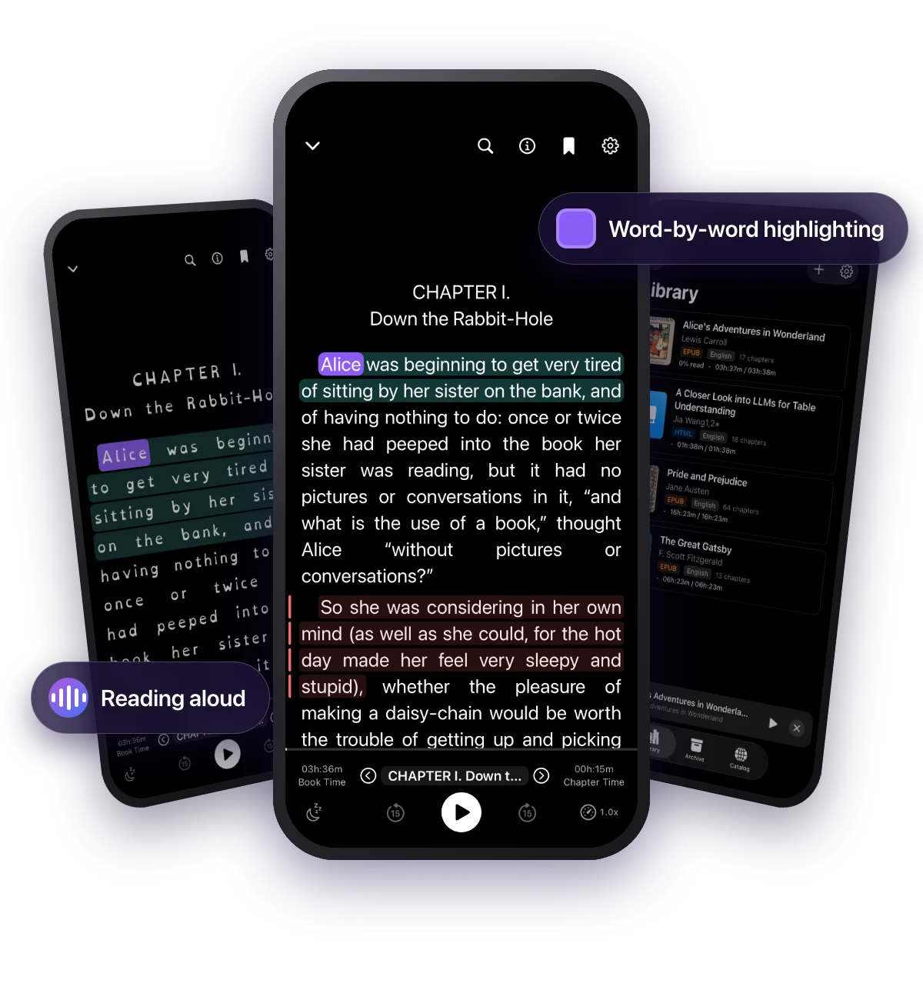
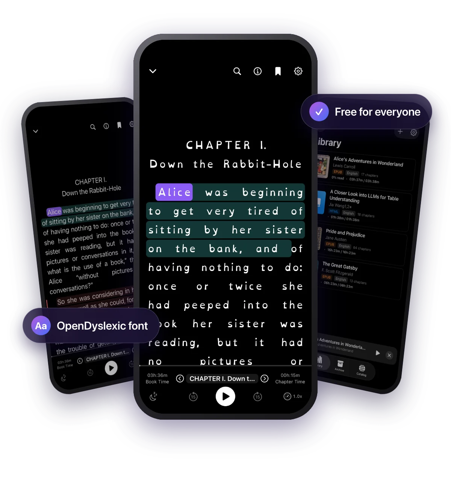
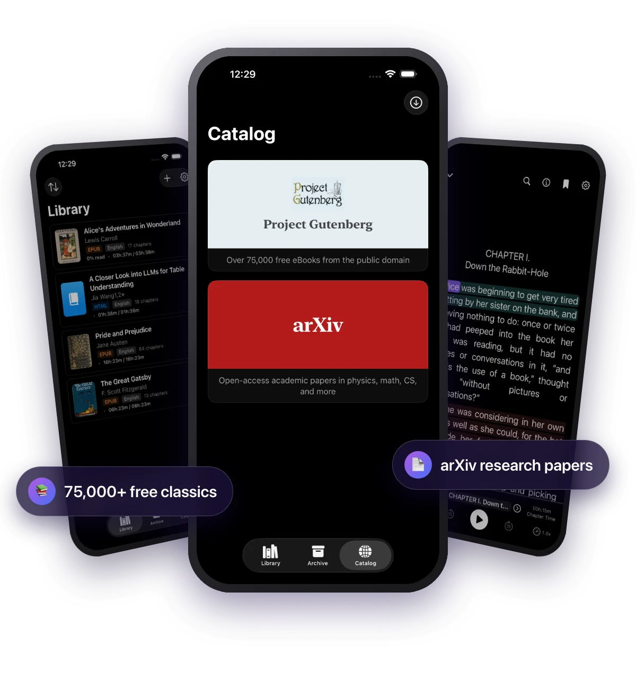

One-time purchase. No subscription.
Turn any EPUB, PDF or FB2 into an audiobook
WhisperBook reads your books aloud on iPhone and iPad and highlights every word as it speaks. Your files stay on your device. No account, no cloud, no tracking.
Free download. Try Pro free for 3 days, then $14.99 once, yours to keep.

Everything you need to listen to your books
-
EPUB, PDF and FB2
Import from Files, Safari or AirDrop. FB2 archives (.fb2.zip, .fbz) open directly, no conversion needed.
-
Word-by-word highlighting
The current word and sentence light up as they are spoken, so your eyes and ears stay on the same line.
-
Clean PDF listening
Page numbers, running headers and footers are skipped, so you hear the text, not "page 42" every few minutes.
-
Free classics and papers
Browse and download public-domain books from Project Gutenberg and research papers from arXiv inside the app.
-
Your speed, your voice
Play from 0.5x to 3x, change pitch, and pick any voice installed on your device, including Enhanced and Premium voices.
-
Listen anywhere
Lock screen controls, background playback and a sleep timer that stops at the end of a chapter or after a set time.
-
Read your way
Seven reading fonts, adjustable size and line spacing, seven color themes and your own custom colors.
-
Bookmarks and search
Color-coded bookmarks, a table of contents for every chapter, and full-text search inside the book.
-
Read Aloud from Safari
Share any web page or selected text to “WhisperBook Read Aloud” and listen right away, with the spoken word highlighted.
-
Continue Listening widget
A Home Screen widget shows the book you were reading and opens it at the right chapter with one tap.
-
iPhone, iPad and iPhone Duo
One app for every device you read on, including the foldable iPhone Duo. Pro covers them all with one purchase.
-
Private by design
Books never leave your device. There is no sign-up, no analytics account and no cloud sync to opt out of.
Built for readers with dyslexia
Many dyslexic readers understand a text best when they hear it and see it at the same time. WhisperBook does both: it reads aloud and moves a highlight across each word, so you never lose your place.
Switch the reader to OpenDyslexic, a typeface with weighted letter bottoms that make b, d, p and q harder to confuse. WhisperBook pairs it with wider letter and line spacing. The font is free for everyone, not a Pro feature.
Slow the voice down for difficult passages, speed it up for review, and choose a background color that is comfortable for you, such as sepia or a dark theme.

Pay once. Keep it.
$14.99 one-time, WhisperBook Pro
No subscription, no renewal, no account. Try every Pro feature free for 3 days with no automatic charge, and share Pro with your family through Family Sharing.
- Free: browse the free catalog, add two books a month to your library, 10 minutes of background playback per session, default voice and speed, OpenDyslexic, light and dark themes.
- Pro: unlimited imports, all voices and languages, full speed and pitch control, premium and custom themes, lock screen controls and unlimited background playback, bookmarks and sleep timer.
Free classics and research papers, ready to play
WhisperBook has two free catalogs built in. Tap a title, it downloads into your library, and WhisperBook starts reading. The free version adds two books or papers a month to your library; Pro removes the limit.
Project Gutenberg
Project Gutenberg is a volunteer-run library of more than 75,000 free ebooks whose US copyright has expired. Browse the most popular titles or search by title and author: Austen, Dickens, Shelley, Doyle, Tolstoy, Dostoevsky and many more, in dozens of languages. Books download as EPUB, so you get chapters, a table of contents and word-by-word highlighting.
arXiv
arXiv is the open-access archive run by Cornell University where researchers share papers in computer science, mathematics, physics, quantitative biology, quantitative finance, statistics, electrical engineering and economics. Browse the latest papers by category or search by keyword, then listen to a paper on your commute. WhisperBook uses the paper's HTML version when arXiv has one and falls back to the PDF.

FAQ
Is WhisperBook a subscription?
No. WhisperBook is free to download. WhisperBook Pro is a single $14.99 in-app purchase that you pay once and keep. There is no subscription and no renewal.
Is WhisperBook an alternative to Speechify or Voice Dream?
Yes, for listening to your own EPUB, PDF and FB2 files. The biggest difference is the price model: WhisperBook Pro is a one-time purchase, while Speechify and Voice Dream Reader are sold as subscriptions. WhisperBook also needs no account and plays offline with the voices on your device.
Which file formats does WhisperBook support?
EPUB, PDF and FB2 (FictionBook), including .fb2.zip and .fbz archives. DRM-protected books bought from stores such as Apple Books or Kindle cannot be imported.
Do I need an account or an internet connection?
No account is needed. Your books stay on your device and speech is generated by the voices built into iOS, so imported books play offline. You only need a connection to download books from the free catalog.
What is free and what needs Pro?
Free: browse and download the Project Gutenberg and arXiv catalog, add two books per month to your library (from the catalog or your own files), 10 minutes of background playback per session, the default voice and speed, the OpenDyslexic font, and light and dark themes. Pro adds unlimited imports, all voices and languages, full speed and pitch control, premium and custom themes, lock screen controls and unlimited background playback, bookmarks and the sleep timer.
Can I try Pro before buying?
Yes. Start a free 3-day Pro trial from inside the app. It unlocks every Pro feature and ends on its own, with no automatic charge.
Does WhisperBook work on iPad?
Yes. WhisperBook runs on iPhone and iPad, and a Pro purchase covers both when you use the same Apple Account. Pro also supports Family Sharing.
Which voices does WhisperBook use?
WhisperBook uses the text-to-speech voices installed on your device. You can download higher-quality Enhanced and Premium voices for free in the iOS Settings app under Accessibility, Spoken Content, Voices.